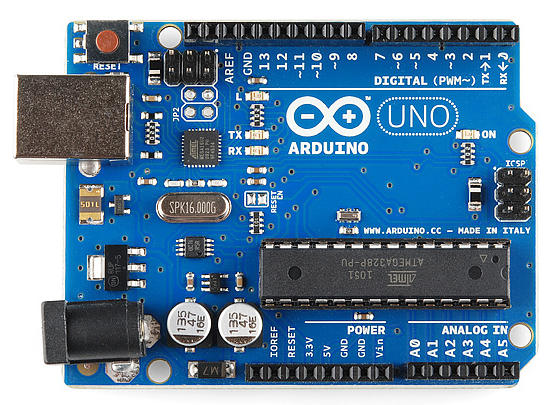
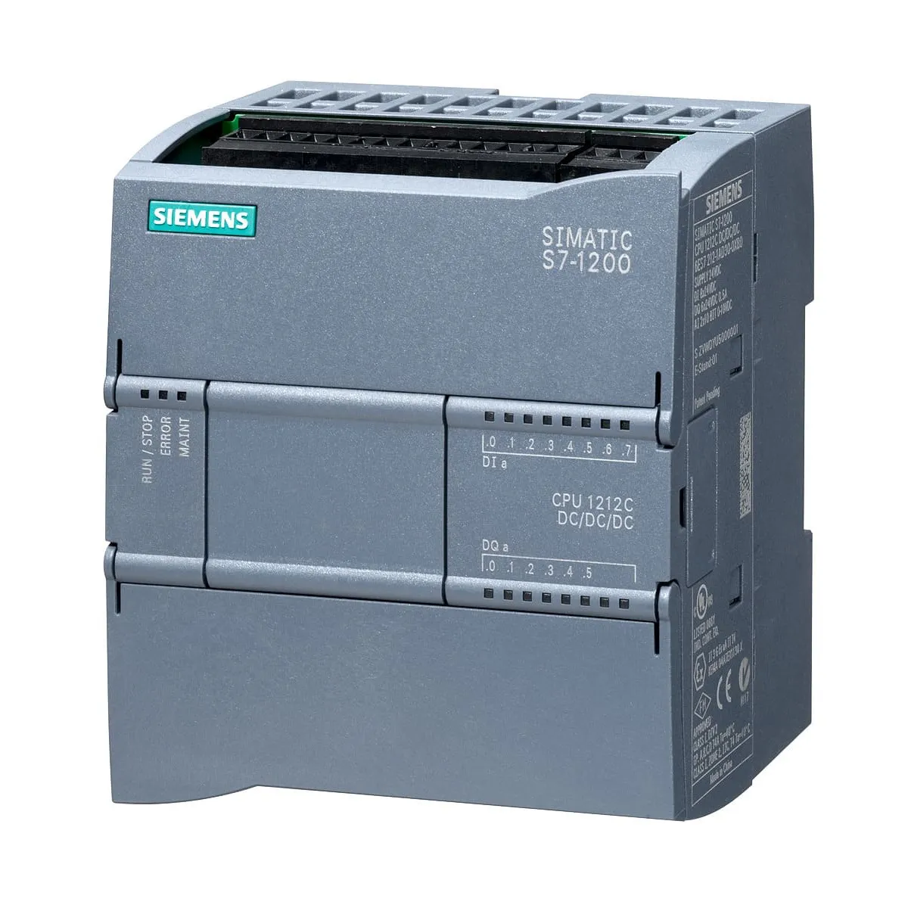

Arduino
O Arduino é uma plataforma de prototipagem eletrônica baseada em um microcontrolador, utilizada para desenvolver projetos de automação, robótica e sistemas embarcados. Ele permite ler sinais de sensores (entradas) e controlar dispositivos (saídas), sendo bastante usado por estudantes, iniciantes e também em projetos mais avançados.
No Arduino, a escala analógica de entrada funciona de 0 a 1023, pois ele possui um conversor analógico-digital (ADC) de 10 bits. Isso significa que uma tensão, por exemplo de 0 a 5 V, é convertida em valores inteiros dentro desse intervalo (0 representa 0 V e 1023 representa 5 V, aproximadamente). Já na saída, o Arduino não gera uma tensão analógica real, mas sim um sinal chamado PWM (modulação por largura de pulso), que simula um valor analógico. Esse sinal varia de 0 a 255, pois utiliza uma resolução de 8 bits.
A entrada analógica no Arduino é utilizada para ler sinais contínuos, ou seja, valores que podem variar gradualmente, como temperatura, luminosidade ou tensão. Esses sinais são convertidos em números pelo ADC, permitindo que o microcontrolador interprete diferentes níveis.
Já a entrada digital trabalha apenas com dois estados: ligado ou desligado (HIGH ou LOW), correspondendo geralmente a 5 V ou 0 V. Esse tipo de entrada é usado para ler sinais simples, como o acionamento de um botão ou a presença de um sinal lógico.
Assim, enquanto as entradas analógicas permitem medir variações contínuas, as entradas digitais são utilizadas para detectar estados binários, tornando o Arduino versátil para diferentes tipos de aplicações.
A saída analógica (PWM) no Arduino é uma forma de simular um sinal analógico utilizando um sinal digital. PWM significa Modulação por Largura de Pulso (do inglês Pulse Width Modulation) e consiste em alternar rapidamente o sinal entre ligado (HIGH) e desligado (LOW). O que varia não é a intensidade da tensão em si, mas o tempo em que o sinal permanece ligado dentro de um determinado período.
Esse tempo ligado é conhecido como ciclo de trabalho (duty cycle). Quando o valor é 0, o sinal permanece sempre desligado, correspondendo a 0 V. Quando o valor é 255, o sinal fica sempre ligado, correspondendo a aproximadamente 5 V. Já os valores intermediários fazem com que o sinal ligue e desligue rapidamente, gerando uma tensão média proporcional. Por exemplo, um valor próximo da metade faz com que o sinal fique metade do tempo ligado, simulando cerca de 2,5 V.
Embora não seja uma saída analógica real, esse sinal é interpretado como analógico por muitos dispositivos devido à sua alta frequência. Por isso, o PWM é amplamente utilizado para controlar o brilho de LEDs, a velocidade de motores e outras aplicações que exigem variação de intensidade. Dessa forma, o Arduino consegue realizar controle “analógico” mesmo utilizando saídas digitais.

CLP
O CLP (Controlador Lógico Programável) é um equipamento eletrônico utilizado na automação industrial para controlar máquinas e processos de forma automática. Ele recebe sinais de entrada, como sensores e botões, processa essas informações por meio de um programa e, em seguida, envia comandos para as saídas, acionando dispositivos como motores, válvulas e lâmpadas. O CLP é projetado para operar em ambientes industriais, sendo mais robusto, confiável e resistente a interferências do que outros dispositivos eletrônicos.
Um exemplo de CLP é o modelo CPU 1214C, que faz parte da linha S7-1200 da empresa Siemens. Esse modelo é classificado como DC/DC/DC, o que significa que sua alimentação é em corrente contínua (DC), suas entradas também são em corrente contínua e suas saídas são do tipo transistor, ou seja, também em corrente contínua.
O CPU 1214C possui entradas e saídas digitais integradas, além de permitir expansão com módulos adicionais. Ele é bastante utilizado em sistemas de automação de pequeno e médio porte, oferecendo boa capacidade de processamento, comunicação e flexibilidade para diferentes aplicações industriais.

Entrada Analógica e Digital do CLP
No CLP (Controlador Lógico Programável), as entradas são responsáveis por receber sinais de dispositivos externos, como sensores e botões, permitindo que o sistema tome decisões com base nessas informações.
A entrada digital é aquela que trabalha com apenas dois estados possíveis: ligado ou desligado, também representados como 1 ou 0, HIGH ou LOW. Esse tipo de entrada é utilizado para sinais simples, como o acionamento de um botão, um fim de curso ou um sensor que apenas indica presença ou ausência. Por exemplo, um botão pressionado pode representar “1” (ligado), enquanto solto representa “0” (desligado).
Já a entrada analógica é utilizada para sinais contínuos, ou seja, que podem variar dentro de uma faixa de valores. Em vez de apenas dois estados, ela permite medir grandezas como temperatura, pressão, nível ou vazão. Esses sinais geralmente vêm em forma de tensão (como 0 a 10 V) ou corrente (como 4 a 20 mA), e o CLP converte esses valores em números para que possam ser processados pelo programa.
Portanto, enquanto as entradas digitais são usadas para identificar estados simples (ligado/desligado), as entradas analógicas permitem medir variações contínuas, sendo essenciais para o controle mais preciso de processos industriais.